Un royaume fier et ordonné, fondé sur l’honneur, la justice et la discipline. Les Demaciens valorisent la loyauté et la lumière, mais leur rigidité peut parfois virer à l’intolérance.
Noxus
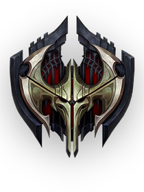
Un empire expansionniste où la force — physique, magique ou intellectuelle — détermine la valeur d’un individu. Brutal mais méritocratique, Noxus transforme l’ambition en pouvoir.
Freljord
Une contrée glaciale et sauvage où des tribus rivales s’affrontent pour la survie et le destin. Forgée dans le froid et la guerre, c’est une terre de légendes et de prophéties anciennes.
Ixtal
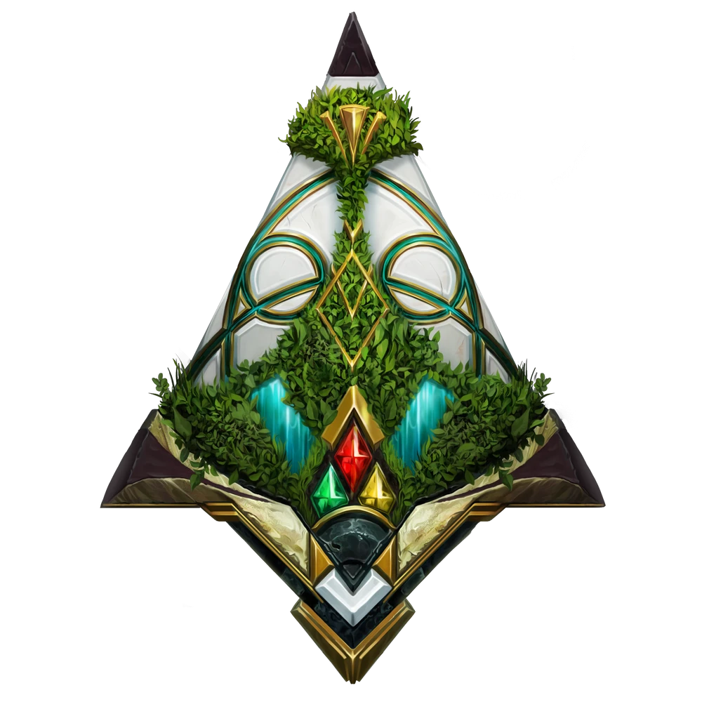
Une civilisation isolée et écologique, maîtresse des éléments grâce à une magie ancestrale. Ixtal protège jalousement ses secrets et ses forêts tropicales luxuriantes, mélangeant savoir ancien et puissance élémentaire.
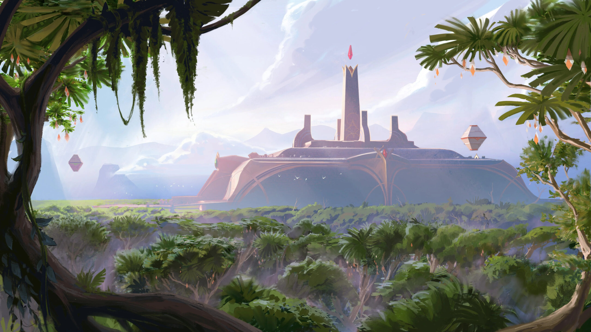
Shurima
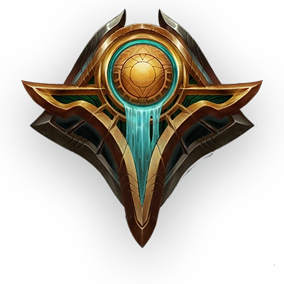
Un ancien empire désertique ressuscité, autrefois glorieux et doré, où les dieux et les sables gardent les secrets d’une civilisation oubliée.
Ionia
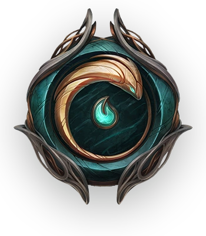
Grand Archipel
Un archipel mystique en harmonie avec la nature et la magie spirituelle. Terre paisible autrefois, aujourd’hui marquée par la guerre et la quête d’équilibre entre tradition et survie.
Mont Targon
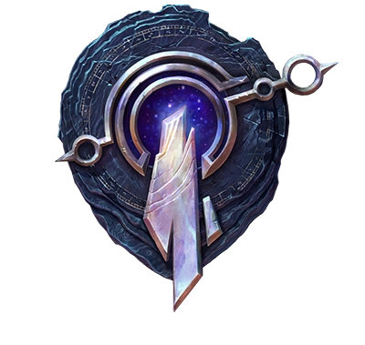
Au sud-ouest de Valoran
Une montagne sacrée touchant les étoiles, où mortels et entités cosmiques se croisent. Ses sommets abritent des pouvoirs célestes et des mythes divins.
Bilgewater
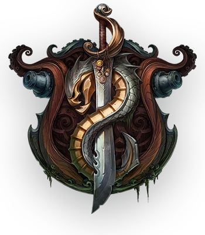
Ile
Une cité portuaire chaotique peuplée de pirates, de monstres marins et de chasseurs de fortune. Un lieu de liberté où la vie ne vaut que le prix de ton prochain pari.
Piltover
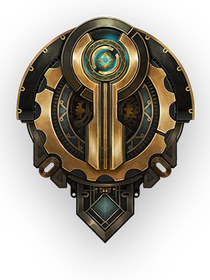
Au centre de Valoran
La “Cité du Progrès”, un centre de science et d’innovation rayonnant, où la technologie hextech a transformé la vie en art et en puissance.
Zaun
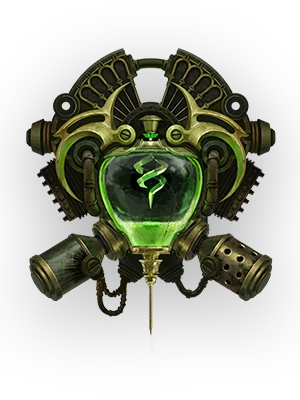
La cité souterraine sous Piltover, anarchique et polluée, où les inventeurs fous et les chimistes expérimentent sans limites morales dans une brume toxique de fumée et de néons.
Iles Obscures
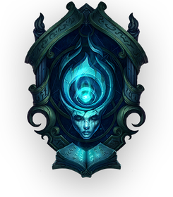
Ile
Une terre maudite noyée dans une brume spectrale. Jadis prospère, elle est aujourd’hui le domaine des morts et des âmes corrompues par la Ruine.
Bandle
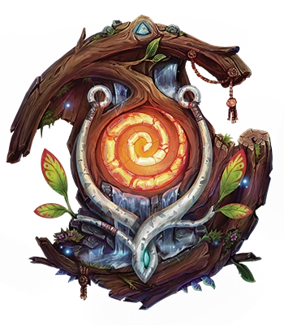
Autre dimension
Le foyer des yordles : une cité miniaturisée, joyeuse et fantaisiste, pleine de charme et d’espièglerie. Bandle est un lieu de curiosité, d’aventures et d’un sens unique de la communauté.
Le Néant
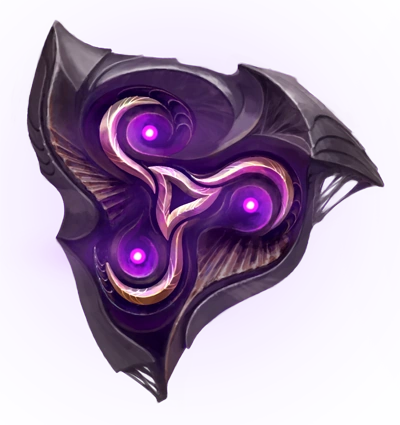
Une force cosmique et corruptrice venue d’au-delà, dévorant et transformant la matière et la vie. Le Néant incarne l’horreur indicible et l’invasion silencieuse des mondes vivants.